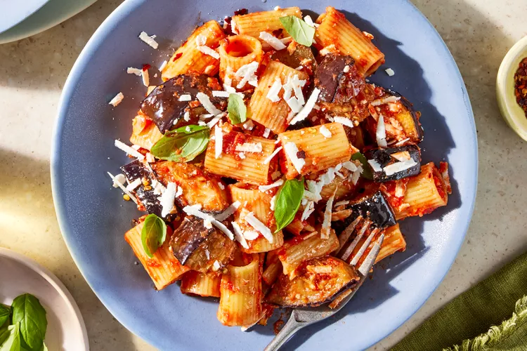

With a short ingredient list of crushed tomatoes, eggplant, basil, garlic, and cheese, pasta alla norma is more than the sum of its parts. Tender rigatoni noodles trap the sweet and lightly spicy tomato sauce and silky, luscious eggplant for a pasta to remember. Ricotta salata, an aged and grate-able version of fresh ricotta, adds rich saltiness, while basil brings in herbaceous freshness.
It’s a classic for a reason—and forgivingly easy to make at home.
Meanwhile, pan-fry the eggplant: Heat 2 tablespoons of the oil in a large high-sided skillet over medium-high heat. Add half of the eggplant in an even layer and cook, undisturbed, until golden brown, about 2 minutes. Add another 2 tablespoons of the oil and cook, stirring occasionally, until well browned on most sides, about 6 minutes. Transfer to a paper towel-lined plate and sprinkle with 1/4 teaspoon of the salt.
Add 2 tablespoons of the oil to the hot skillet (still over medium-high heat). Repeat the cooking process once more with the remaining eggplant and additional 2 tablespoons of the oil. Transfer to the plate with the cooked eggplant and sprinkle with the remaining 1/4 teaspoon salt. Set aside.
Make the sauce: Carefully wipe the skillet clean. Add the remaining 1 tablespoon of oil to the skillet and heat over medium heat. Add the garlic and 1/4 teaspoon of the red pepper flakes. Sauté until the garlic has started to turn golden brown, about 1 minute.
Add the tomatoes and bring to a boil over medium-high heat, stirring occasionally. Reduce the heat to medium and add the torn basil. Cook, stirring occasionally, until thickened slightly, about 10 minutes.
Meanwhile, cook the pasta: While the sauce is simmering, stir the pasta into the boiling water and cook until the pasta is al dente according to package instructions, about 11 minutes.
Assemble the pasta: Using a spider or slotted spoon, add the cooked pasta to the thickened sauce (still over medium heat) along with 1/3 cup of the pasta water. Stir and fold to coat the pasta well in the sauce.
Add the reserved cooked eggplant and stir to combine. Add more pasta water, 1/4 cup at a time, to reach the desired consistency (keep in mind the sauce will continue to thicken off the heat).
Remove from the heat and stir in 1/2 cup of the ricotta salata. Garnish with the remaining 1/4 cup cheese, 1/4 teaspoon crushed red pepper, and basil leaves. Serve immediately.